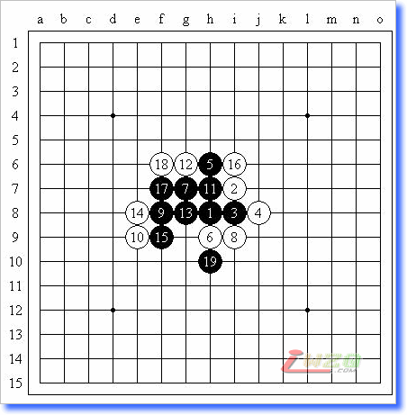
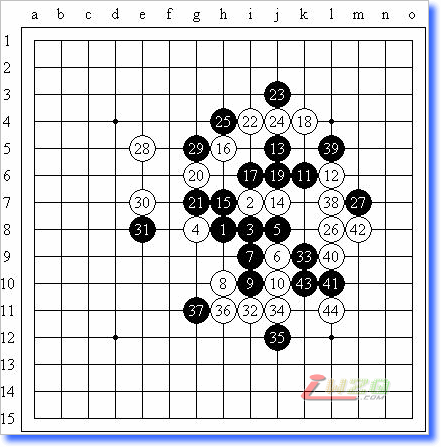

原文载于我的百度空间【复平面】（http://hi.baidu.com/%C6%C1%B1%CE/blog/item/d4ba64ec5311ced42e2e21d4.html）
先废话一段：
昨天去中心下棋，结果大家一起哄就搞了这么个小棋战，说白了就是要取人之长补己之短（明显是向上海学习）。云月这个局面是临时定的，这样不是很好，并不能练到很多东西，因为小棋战这种东西就是强调赛前准备的（我的理解），这样临时开一场，又成了练习计算力了（有很多局面对于我们还是未知的，即使是云月）。不过作为一种尝试，北京方面还是走出了第一步。
云月这个局面很有意思，在花月、浦月之后，被首先完全必胜的大概就是这个了吧？练好花、浦、云的必胜手法还是很重要的，毕竟做棋思路有些还是不同于花月和浦月的。
这次比赛，因为人数比较多，就搞成了单循环赛（有逻辑嘛？……）。觉得对局量实在是太大了，而且我是在下午临时被忽悠进去参加的（上午开赛的时候我在打“天王赛”，没来得及参加），总共12局棋，一下午下完一半的时候已经接近崩溃了，貌似我总是执白考别人啊，很少有人考我呢……时限是每人半个小时包干……似乎很少出现超时的情况，嘿嘿~据我所知，这次比赛好像也没有和棋出现呢……这次比赛，我的对局感觉都很小巧，似乎没有出现太多中盘缠斗的状况呢……这是好还是不好的现象呢？
但愿我没记错，本次比赛由8个人演变至15个人，名单为：仇云飞、王轩、叶冬宁、马世卫、王晓、朱立巍、梁大伟、李鹏、田鑫宇、杜雪娇、高洋（音）、王晨、佟明宇、李一、霍馗。最终结果是，第一名：李一（13胜1负，对仇云飞直胜），第二名：仇云飞（13胜1负），第三名：李鹏（12胜2负）。梁大伟（12胜2负）努力把我砍掉了，然而最后却没进前三（输给李鹏了？不知道……），似乎很宓难子……他很期待山月战，嘿嘿~
我得了一多功能背包，很不错~~~
客观而言，这次能拿第一存在一定的偶然性，从实战进程来说，输掉2~3盘应该是一个比较正常的发挥。
这次比赛很大的缺憾是没有进行棋谱的记录，真希望能看看其他的棋谱……在我的全部14盘棋中（包括两轮对手弃权），我努力回忆起了其中的11盘，太不容易了，为我自己感慨一下……由于云月局本身的特点，导致开局阶段的交换、两打、一些乱七八糟的相通和盘端问题记得不是很清楚了，希望大家见谅，但是总体思路和手顺应该是没有问题的。
很期待下周的寒星战！我会好好准备的！如果我能在两天内写好实习报告的话……嗯嗯……
这里还要问各位几个问题，希望有这方面比赛经验的老师们帮助解答一下：（看起来应该是上海方面最有权威嘛？）
1、比赛的性质？是不是应该提前通知，然后进行赛前准备，然后达到深入了解某一局面的变化的效果？
2、比赛准备的时间？多长时间准备一个时间比较合适呢？太长了会厌倦，太短了会不全面？
3、比赛的轮次、方式、时限怎么确定？15个人（或相似的数量级）的话应该用积分编排嘛？
4、没有出现“中盘战斗”的感觉是否正常？从小棋战的目的上来讲，提前放弃必胜手段寻求变招是否合适？
5、疏星、瑞星等相对平衡的局面进入小棋战范围是否合适？还是说最好只包括优势和必胜的局面？
废话完毕，进入正题~
===============
小棋战【云月】，北京市东城区海运仓社区活动站

为了避免一些不必要的麻烦，5选择了传说中的3打，但是云飞很快地留下了1打，不知道他的想法。至11的变化我还记得，这里的唯一一个强防请参看我出的一道习题（http://hi.baidu.com/%C6%C1%B1%CE/blog/item/ee3fb91eb432e81d403417f3.html），实战的12或许是想过头了，黑棋简单追胜。
小棋战【云月】，北京市东城区海运仓社区活动站
云月局（不换），5A=h9，王轩（黑）负李一（白）

不欺负小孩子。不过两打错了的话就惩罚一下……11和13让我很慌，他什么时候这么NB了？后来还好，演变至20白满意。26手想了想，决定放弃不切实际的期待对手犯错误的想法，保留变化走了实战的26。在左边腾挪一下之后，32位他竟然还不冲（不过冲了也不会好到哪儿去）！于是轻松占到……33后34简明必胜。
对局质量确实欠佳
1、比赛的性质？是不是应该提前通知，然后进行赛前准备，然后达到深入了解某一局面的变化的效果？
小棋战的目的主要是为了使棋手熟悉和掌握某一布局变化的比赛，上海也是借鉴于日本，效果不错。比赛性质应该定位在练习赛，计算成绩但不计算等级分。上海一般每年初计划就定了，一年有哪几个大家都知道，然后赛前一周再通知一下，以便于大家准备。
2、比赛准备的时间？多长时间准备一个时间比较合适呢？太长了会厌倦，太短了会不全面？
在第1个问题的回答里面已经说了。
3、比赛的轮次、方式、时限怎么确定？15个人（或相似的数量级）的话应该用积分编排嘛？
我们一般都安排大半天时间，每方面30分钟，积分循环制，5轮，当然人数特别多，达到20人以上也可以考虑7轮，但这样必须2天，而从小棋战的定位看，5轮足够了。
4、没有出现“中盘战斗”的感觉是否正常？从小棋战的目的上来讲，提前放弃必胜手段寻求变招是否合适？
如果经过研究，一般不会不出现中盘，至少目前来讲，还无人可以达到黑优局必然胜利的情况。到了某一种高度，是会出现黑5多打点的。因为对高水平选手就不是简单复习定式那么简单了，而是尝试变化和中盘攻击。
5、疏星、瑞星等相对平衡的局面进入小棋战范围是否合适？还是说最好只包括优势和必胜的局面
都可以。因为小棋战的目的是为了熟悉所有布局变化。所以包括必败局都包括了。
另，我们目前也在原有基础上进一步考虑如何继续完善和丰富小棋战的赛事制度。

 LS的在挖坟・・
LS的在挖坟・・